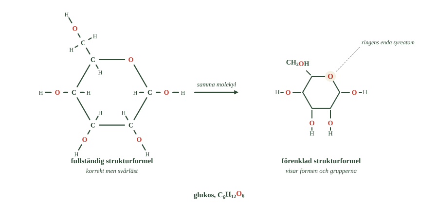
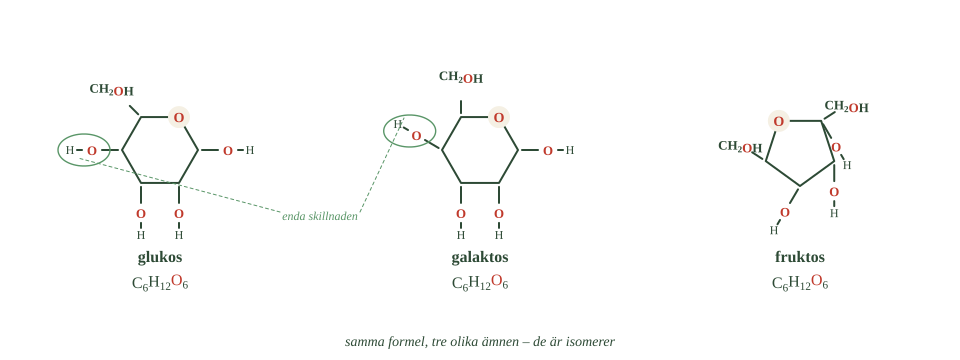
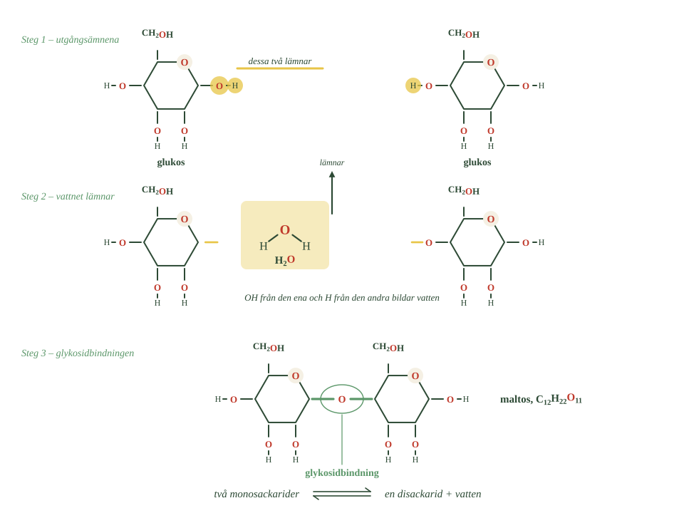
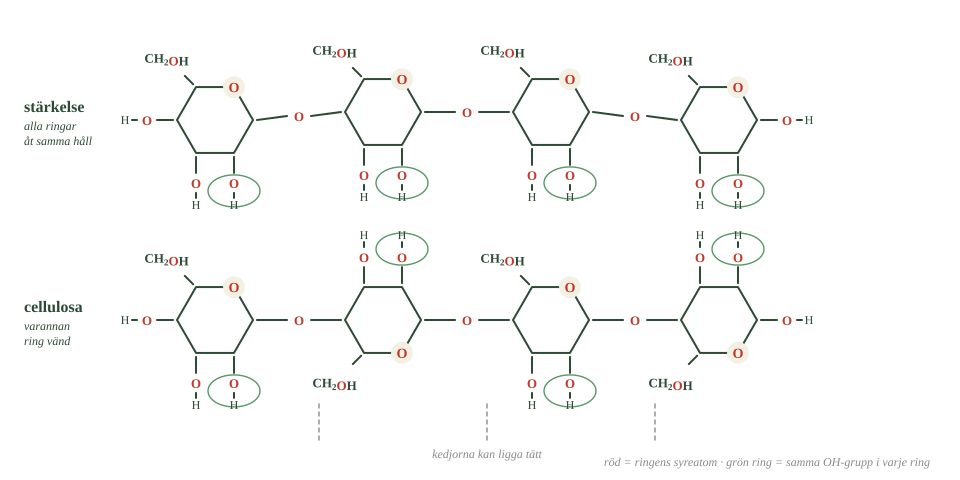

- Varför heter det kolhydrat, och varför är namnet missvisande?
- Vilka atomer ingår i glukosringen?
- Vad visar den förenklade strukturformeln, och vad utelämnar den?
- Vad har glukos, fruktos och galaktos gemensamt?
- Vad skiljer dem åt?
Kolhydrater består av kol, väte och syre.
De enklaste är små sockermolekyler. De kan kopplas ihop två och två — eller byggas till kedjor med tusentals enheter.
Samma lilla byggsten kan alltså ge ämnen som är helt olika.
Namnet betyder kol och vatten
En av de vanligaste kolhydraterna är glukos. Formeln är \(\ce{C6H12O6}\).
Titta på siffrorna. Sex kolatomer, tolv väteatomer, sex syreatomer.
Väte och syre står alltså i förhållandet två till ett — precis som i vatten, \(\ce{H2O}\).
Det är därifrån namnet kolhydrat kommer. Det betyder ungefär "kol och vatten".
Men namnet är missvisande
Det sitter inga vattenmolekyler fast på kolatomerna. Så är det inte.
Formeln räknar bara hur många atomer av varje slag molekylen innehåller. Den säger ingenting om hur de sitter ihop.
Och det är hur de sitter ihop som bestämmer egenskaperna. Namnet är en gammal gissning som blev kvar.
Sex kolatomer bildar en ring
Glukos har sex kolatomer. Men de ligger sällan i en rak rad.
I stället böjer sig kedjan och sluter sig till en ring.
Räkna vad som ingår i ringen: fem kolatomer plus en syreatom. Det blir sex hörn. Den sjätte kolatomen sitter utanför.
Att kolkedjor kan bilda ringar såg du redan i delkapitel 1. Glukos visar varför det spelar roll.
Den förenklade strukturformeln
En fullständig strukturformel för glukos har massor av atomer och blir nästan omöjlig att läsa.
Därför ritas sockerringar förenklat.
- Hitta den röda syreatomen i ringen till höger.
- Hur många hörn har sexhörningen, och vad är varje hörn?
- Vilken kolatom sitter utanför ringen?

Ringen ritas som en sexhörning. De flesta hörnen är kolatomer, och ett av dem är syreatomen. Från kolatomerna sticker OH-grupper ut.
Väteatomer som sitter på kol ritas inte alls.
Det låter som att man tappar information — men man tappar bara det som är likadant överallt. Kvar blir det viktiga: formen och var grupperna sitter.
Glukos, fruktos och galaktos har samma formel
Glukos är inte ensam om formeln \(\ce{C6H12O6}\).
Även fruktos och galaktos har sex kolatomer, tolv väteatomer och sex syreatomer.
- Räkna hörnen i varje ring.
- Jämför de två inringade OH-grupperna. Vad är skillnaden?
- Vad står under alla tre ringarna?

Ändå är det tre olika ämnen. Atomerna sitter ihop på olika sätt.
De är alltså isomerer — samma begrepp som du mötte hos kolvätena.
Glukos och galaktos ritas som sexhörningar. Fruktos ritas oftast som en femhörning.
Samma atomer, olika form, olika ämnen.
- Varför heter det kolhydrat, och varför är namnet missvisande?
- Vilka atomer ingår i glukosringen?
- Vad visar den förenklade strukturformeln, och vad utelämnar den?
- Vad har glukos, fruktos och galaktos gemensamt?
- Vad skiljer dem åt?
Kolhydrater är en stor grupp organiska ämnen som består av kol, väte och syre.
De enklaste är små sockermolekyler. De kan kopplas ihop två och två, eller byggas till mycket långa kedjor.
Samma lilla byggsten kan därför ge ämnen med helt olika egenskaper.
Kolhydrater innehåller kol, väte och syre
En av de vanligaste kolhydraterna är glukos, med molekylformeln \(\ce{C6H12O6}\).
Lägg märke till förhållandet mellan väte och syre: tolv mot sex, alltså dubbelt så många väteatomer. Precis som i vatten, \(\ce{H2O}\).
Därifrån kommer namnet kolhydrat — ungefär "kol och vatten".
Men namnet är missvisande. Det sitter inga vattenmolekyler på kolatomerna. Formeln räknar bara atomerna, och det är hur de är bundna som bestämmer ämnets egenskaper.
Sex kolatomer bildar en ring
Glukos har sex kolatomer, men i vatten ligger de sällan i en rak kedja.
I stället böjer sig kedjan så att molekylen bildar en ring.
Fem av kolatomerna ingår i ringen, tillsammans med en syreatom. Den sjätte kolatomen sitter utanför. Ringen består alltså av sex atomer — fem kol och ett syre.
Att kolkedjor kan slutas till ringar såg du redan i delkapitel 1. Glukos är exemplet på varför det spelar roll.
Den förenklade strukturformeln
En fullständig strukturformel för glukos blir snabbt oläslig. Därför ritas sockerringar förenklat.
Ringen ritas som en sexhörning. De flesta hörnen är kolatomer, och ett av dem är syreatomen. Från kolatomerna sticker OH-grupper ut. Väteatomer som sitter på kol ritas inte ut.
Förenklingen gör det lättare att se det som är viktigast: formen och var grupperna sitter.
Glukos, fruktos och galaktos har samma formel
Glukos är inte ensam om formeln \(\ce{C6H12O6}\). Även fruktos och galaktos har sex kolatomer, tolv väteatomer och sex syreatomer.
Ändå är de tre olika ämnen, eftersom atomerna sitter ihop på olika sätt. De är isomerer — samma begrepp som hos kolvätena.
Glukos och galaktos ritas som sexhörningar. Fruktos ritas oftast som en femhörning.
Samma atomer, olika form, olika ämnen.
Sockerringen är inte platt, och den öppnas hela tiden
Standardtexten ritar glukos som en sexhörning. Det är det ritsätt alla kemister använder, och det fungerar. Men det döljer två saker.
Ringen är inte platt. En sexhörning på papper ser plan ut, men bindningsvinklarna kring varje kolatom är ungefär 109 grader — samma vinkel som i metan. En plan sexkant skulle kräva 120 grader.
Ringen viker sig därför, och den vanligaste formen liknar en länstol sedd från sidan. Kemister kallar den just stolformen.
Det spelar roll. I stolformen pekar OH-grupperna antingen ut från ringen eller upp och ner från den, och vilket det blir avgör hur molekylen kan binda till andra.
Ringen är inte heller permanent. I vattenlösning öppnar sig glukosringen hela tiden, blir en rak kedja ett ögonblick, och sluter sig igen.
Vid varje given tidpunkt är ungefär en molekyl på tusen öppen. Men eftersom det sker miljardtals gånger i sekunden hinner varje molekyl öppna och sluta sig mycket ofta.
Det förklarar en sak Standardtexten inte kan. När ringen sluter sig igen kan OH-gruppen vid en bestämd kolatom hamna antingen uppåt eller nedåt — och det är just den kolatomen som avgör om glukosen blir stärkelse eller cellulosa.
Formerna kallas alfa-glukos och beta-glukos. I ren glukoslösning finns båda samtidigt, eftersom molekylerna hela tiden öppnar och sluter sig.
Om modellen. Sexhörningen är en ritning, inte ett fotografi. Den visar vad som sitter bundet till vad, vilket är det viktiga. Men molekylen är varken plan eller stilla — och att den inte är stilla är förutsättningen för att två olika former alls ska kunna finnas.
- Vilka delar lämnar molekylerna när två sockerringar kopplas ihop?
- Vad kallas bindningen som bildas?
- Vilken tidigare reaktion liknar detta?
- Vilka två monosackarider bygger upp laktos?
- Vad händer med laktosen hos den som saknar laktas?
Vatten lämnar när bindningen bildas
Två sockerringar kan kopplas ihop till en större molekyl.
Så här går det till.
- Vilken ring lämnar OH, och vilken lämnar H?
- Vad bildas av de två gula delarna?
- Jämför med bilden av esterbildningen i förra delkapitlet. Vad är likadant?

En OH-grupp på den ena ringen möter ett H från den andra. De två lämnar sina molekyler och sätter sig ihop.
Vad blir OH plus H? Vatten.
Samtidigt bildas en ny bindning mellan ringarna, och den kallas glykosidbindning.
Du har sett det förut
Känner du igen mönstret?
Exakt samma sak hände vid esterbildningen i förra delkapitlet. En OH från den ena molekylen, ett H från den andra, en vattenmolekyl som lämnar, och en ny bindning.
Reaktioner av det slaget har ett eget namn: kondensationsreaktioner.
Du kommer att möta dem en gång till i det här delkapitlet.
Disackarider består av två sockerringar
När två monosackarider binds ihop bildas en disackarid. Förleden di- betyder två.
Sackaros är vanligt strösocker. Det består av glukos och fruktos.
Laktos är mjölksocker och består av glukos och galaktos.
Maltos består av två glukosmolekyler.
Namnen säger tyvärr ingenting om vilka delar de har. Det får man lära sig.
Bindningen kan brytas igen
En glykosidbindning kan också brytas.
Då sker motsatsen: en vattenmolekyl används för att dela molekylen i två. Reaktionen kallas hydrolys.
Kondensation bildar vatten. Hydrolys förbrukar vatten. Samma bindning, två riktningar.
I kroppen sker det med hjälp av enzymer.
Enzymet laktas bryter glykosidbindningen i laktos, så att glukos och galaktos frigörs.
Den som bildar för lite laktas kan inte bryta bindningen. Laktosen når då tjocktarmen, och där bryter bakterierna ner den i stället. Då bildas bland annat gaser.
- Vilka delar lämnar molekylerna när två sockerringar kopplas ihop?
- Vad kallas bindningen som bildas?
- Vilken tidigare reaktion liknar detta?
- Vilka två monosackarider bygger upp laktos?
- Vad händer med laktosen hos den som saknar laktas?
Vatten lämnar när bindningen bildas
Två monosackarider kan kopplas ihop till en större molekyl.
När det sker reagerar en OH-grupp på den ena med ett H från den andra. De lämnar tillsammans och bildar vatten.
Samtidigt bildas en ny bindning mellan sockerringarna. Den kallas glykosidbindning.
Principen känner du igen från esterbildningen. Också där kopplades två molekyler ihop samtidigt som en vattenmolekyl lämnade.
Reaktioner av det slaget kallas kondensationsreaktioner.
Disackarider består av två monosackarider
När två monosackarider binds ihop bildas en disackarid. Förleden di- betyder två.
Sackaros — vanligt strösocker — består av glukos och fruktos. Laktos, mjölksocker, består av glukos och galaktos. Maltos består av två glukosmolekyler.
Namnet på disackariden säger alltså ingenting om vilka delar den har. Det får man lära sig.
Bindningen kan brytas igen
En glykosidbindning kan också brytas. Då sker motsatsen: en vattenmolekyl används för att dela molekylen i två. Reaktionen kallas hydrolys.
I kroppen sker den med hjälp av enzymer.
Enzymet laktas bryter glykosidbindningen i laktos, så att glukos och galaktos bildas.
Den som bildar för lite laktas kan inte bryta bindningen. Laktosen når då tjocktarmen, där bakterier bryter ner den i stället — och då bildas bland annat gaser.
Reaktionen går åt det håll vattnet pekar
Standardtexten säger att kondensation bildar vatten och hydrolys förbrukar det. Det stämmer, och paret är vackert symmetriskt. Men det väcker en fråga texten inte ställer.
Om samma reaktion kan gå åt båda hållen — vad bestämmer riktningen?
Svaret är hur mycket vatten som finns.
I en torr miljö finns lite vatten att bilda. Då går reaktionen åt kondensationshållet, och bindningar byggs.
I en vattenrik miljö finns gott om vatten att förbruka. Då går reaktionen åt hydrolyshållet, och bindningar bryts.
Det låter enkelt, men det har en obehaglig följd. Din kropp är full av vatten. Ungefär sextio procent.
Det betyder att alla dina glykosidbindningar, esterbindningar och peptidbindningar hela tiden befinner sig i en miljö som vill bryta dem.
Varför faller du då inte isär?
Därför att reaktionen går oerhört långsamt utan hjälp. En peptidbindning i rent vatten tar uppskattningsvis flera hundra år att brytas av sig själv.
Enzymerna ändrar det. Ett enzym kan snabba upp hydrolysen miljontals gånger — men bara där och när kroppen vill att det ska ske.
Om modellen. Att en reaktion "kan gå åt båda hållen" låter som att den väljer fritt. Den gör den inte. Riktningen bestäms av omgivningen, och hastigheten av om det finns ett enzym. Livet är byggt av bindningar som borde brytas men som inte hinner.
- Vilken monosackarid byggs både stärkelse och cellulosa av?
- Vad är det som skiljer de två ringformerna åt?
- Hur ligger ringarna i stärkelse jämfört med i cellulosa?
- Varför kan amylas bryta den ena men inte den andra?
- Varför blir cellulosa så starkt?
Båda är polymerer av glukos
Sockerringar kan kopplas ihop i mycket långa kedjor.
Sådana stora molekyler kallas polymerer, och byggstenarna monomerer. Du känner igen orden från plasterna.
Både stärkelse och cellulosa är polymerer av glukos. En enda molekyl kan innehålla tusentals glukosenheter.
De är alltså byggda av exakt samma byggsten.
Och ändå är de så olika att du kan äta det ena men inte det andra.
Skillnaden sitter i hur ringarna är vända
Glukos kan bilda två mycket lika ringformer.
Skillnaden är liten. Det handlar om åt vilket håll en enda OH-grupp pekar vid en av kolatomerna. Uppåt eller nedåt.
- Var sitter den röda syreatomen i varje ring? Följ den längs båda kedjorna.
- Vilken kedja är rakast?
- Varför kan amylas bryta den ena men inte den andra?

Stärkelse byggs av den ena formen. Då hamnar alla ringar vända åt samma håll, och kedjan böjer sig lätt.
Cellulosa byggs av den andra. Då blir varannan ring vänd ett halvt varv, och kedjan blir rak.
Det är allt. En OH-grupp som pekar åt fel håll.
Därför kan amylas bryta den ena men inte den andra
Ett enzym är kräsen. Det fungerar bara på en bestämd form.
Den del av enzymet där arbetet sker har en form som passar just det ämne enzymet ska arbeta med. Ungefär som en nyckel passar ett lås.
Enzymet amylas passar stärkelsens bindningar och kan bryta dem.
Cellulosans bindningar ser annorlunda ut i rummet, eftersom ringarna är vända. Amylas passar inte. Och människan har inget annat enzym som passar heller.
Därför kan du smälta potatis men inte papper — trots att båda är glukoskedjor.
Därför är cellulosa starkt
Den raka formen har en följd till.
Raka kedjor kan ligga tätt intill varandra. Och där OH-grupper på en kedja möter OH-grupper på nästa bildas bindningar mellan dem.
En sådan bindning kallas vätebindning. Den uppstår mellan en väteatom som sitter på syre och en syreatom i en annan molekyl.
Varje enskild vätebindning är svag. Men mellan två långa kedjor finns tusentals av dem.
Tillsammans blir kraften stor. Kedjorna hålls i täta buntar som bildar fibrer.
Det är därför trä bär upp ett helt träd, och därför bomullstråd inte går av.
- Vilken monosackarid byggs både stärkelse och cellulosa av?
- Vad är det som skiljer de två ringformerna åt?
- Hur ligger ringarna i stärkelse jämfört med i cellulosa?
- Varför kan amylas bryta den ena men inte den andra?
- Varför blir cellulosa så starkt?
Båda är polymerer av glukos
Glukosmolekyler kan kopplas samman i mycket långa kedjor. Sådana stora molekyler kallas polymerer, och byggstenarna monomerer — samma begrepp som hos plasterna.
Både stärkelse och cellulosa är polymerer av glukos. En enda molekyl kan innehålla tusentals glukosenheter.
De är alltså byggda av samma byggsten. Ändå är de helt olika ämnen.
Förklaringen sitter inte i vilka atomer de innehåller, utan i hur enheterna är kopplade.
Skillnaden sitter i hur ringarna är vända
Glukos kan bilda två mycket lika ringformer. Skillnaden är åt vilket håll en enda OH-grupp pekar vid en av kolatomerna.
Stärkelse byggs av den ena formen. Ringarna hamnar då vända åt samma håll, och kedjan böjer sig lätt.
Cellulosa byggs av den andra. Där blir varannan glukosenhet vriden ett halvt varv i förhållande till nästa, och kedjan blir rak.
Det är en mycket liten skillnad i molekylen. Konsekvenserna är enorma.
Därför kan amylas bryta den ena men inte den andra
Ett enzym fungerar bara på en bestämd molekylform. Den del av enzymet där reaktionen sker har en form som passar just det ämne enzymet ska arbeta med, ungefär som en nyckel i ett lås.
Enzymet amylas passar stärkelsens glykosidbindningar och kan bryta dem.
Cellulosans bindningar har en annan form i rummet. Amylas passar inte, och människan saknar det enzym som skulle passa.
Därför kan du smälta potatis men inte papper — trots att båda är glukoskedjor.
Därför är cellulosa starkt
Den raka formen har en följd till.
Raka kedjor kan ligga tätt intill varandra. Mellan OH-grupperna på olika kedjor bildas då bindningar — svaga var för sig, men mycket många.
En sådan bindning kallas vätebindning. Den uppstår mellan en väteatom som sitter på syre och en syreatom i en annan molekyl.
Tillsammans blir kraften betydande. Kedjorna hålls i täta buntar som bildar fibrer.
Det är därför trä bär och bomull håller.
Enzymet känner igen formen, inte ämnet
Standardtexten säger att ett enzym passar en bestämd molekylform, som en nyckel i ett lås. Bilden är användbar, men den är för stel — och den förklarar inte varför skillnaden mellan stärkelse och cellulosa räcker.
Den del av enzymet där arbetet sker kallas det aktiva sätet. Det är en ficka i proteinets yta, formad av sidokedjorna från de aminosyror som råkar hamna där när kedjan viks.
Fickan har en bestämd form och en bestämd fördelning av laddningar. För att reaktionen ska ske måste molekylen passa i båda avseendena — den ska ha rätt form och vända rätt sida mot rätt plats i fickan.
Amylas aktiva säte är format efter stärkelsens bindning, där båda glukosringarna är vända likadant.
I cellulosa är varannan ring vriden ett halvt varv. Bindningen mellan dem sitter därför i en annan vinkel. Molekylen kan inte lägga sig i fickan på det sätt som krävs, och reaktionen sker aldrig.
Det enzym som klarar cellulosa heter cellulas, och det har ett aktivt säte format efter den andra geometrin. Människan har det inte. Kor har det inte heller — men bakterierna i deras förmagar har.
Nyckelbilden har dessutom ett fel: enzymet är inte stelt. När molekylen närmar sig ändrar det aktiva sätet form en aning och sluter sig kring den. Det liknar mer en hand som griper än en nyckel som vrids.
Om modellen. Nyckel och lås förklarar varför enzymer är selektiva, och det är den viktigaste poängen. Men verkligheten är rörlig. Enzymet och molekylen anpassar sig till varandra — och det är därför en så liten skillnad som en vänd sockerring kan räcka för att stänga ute ett enzym helt.
Laddar övningskort…
Laddar frågor ...